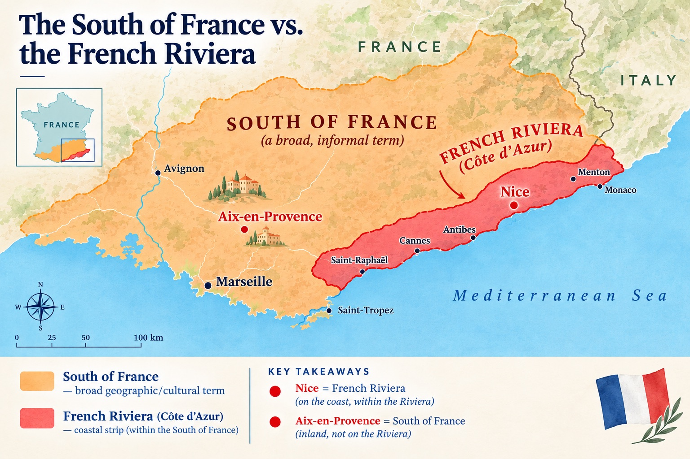
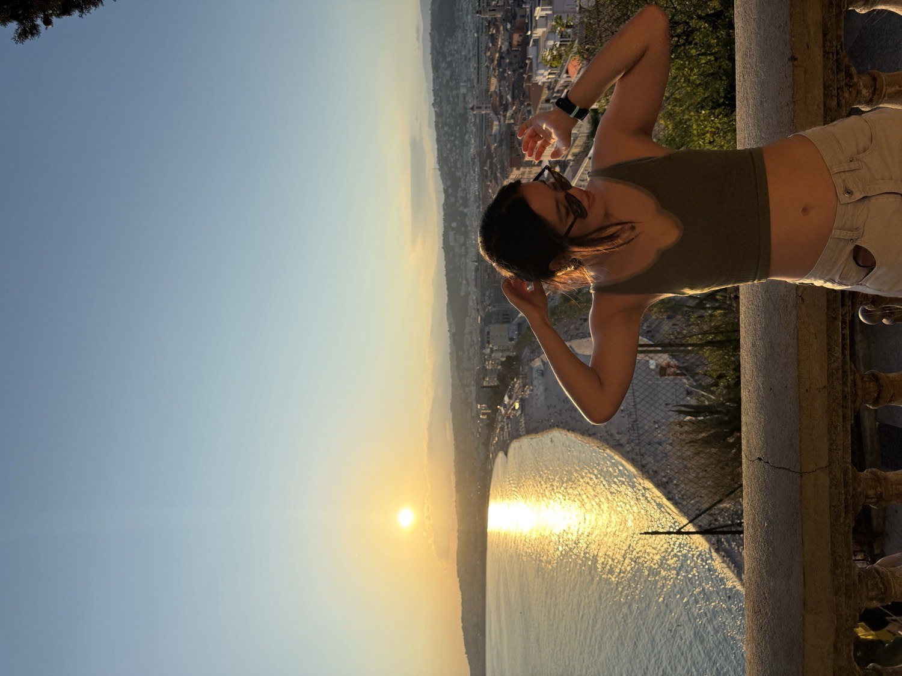

One sunny Friday in early September, Charles and I logged off our work laptops, ready to leave Seattle for the European adventure that awaited us. But first, we were on a mission… to get seats next to each other on a 10-hour flight. Being the cheap ploucs we were, we got the most basic, non-refundable, no-carry-on, no-seat-assigned tickets. We sprinted to our gate to ask if there were any two consecutive seats remaining. The unfazed gate agent looked at her screen, “We have two seats… at the very back of the plane.”
We were off to Paris!
Paris is every people-watcher’s dream. In the States, restaurant chairs face each other, but here they face the street, so restaurant-goers can silently judge everyone who passes, cigarette in hand. Personally, I find the side-by-side seating more romantic than sitting across from each other. You can share food more easily, hear each other better, and avoid awkward first-date eye contact.
If you aren’t into people-watching, try looking at the architecture! The uniform Haussmann architecture found in most arrondissements makes morning walks aesthetically and mathematically satisfying. The buildings' cream-colored exteriors, with floor-to-ceiling windows, brighten up the Parisian streets, even on cloudier days.
When in Paris, you may be tempted to ask your favorite LLM what the best boulangerie is… don’t. Chances are, ChatGPT is recommending the same tourist traps that are charging 10 euros per baguette. The best boulangerie is the one nearest to where you are staying. As long as you lead with “bonjour” and end with “merci” when ordering, there’s a good chance you will leave with a delicious pastry. And on the off chance you are disappointed, try the next closest boulangerie for lunch. My go-tos are a pain au chocolat and a freshly squeezed orange juice.
My favorite view of the Paris leg of our trip was at the top of Galeries Lafayette. While the actual department store smelled like 100 overpriced perfumes, the real star is the terrace overlooking the Paris skyline where one can see Opéra Garnier, the Eiffel Tower, and the Sacré-Cœur Basilica. The honorable mention for “best views” goes to the window clock on the fifth floor of Musée d’Orsay.
Biking and running along the Seine is a great way to see the city and keep your Strava streak alive. Determined to get my VAT refund, I Lime-biked from where I was staying in the 7th arrondissement to the Richelieu neighborhood. Biking on the Rue de Rivoli, a cyclist-friendly street in the 1st arrondissement, made me feel straight out of an Emily in Paris episode! (Just don’t tell my boyfriend; he thinks that show is “offensive to French people everywhere.”)
Meeting my boyfriend’s childhood friends in his hometown was one of the highlights of my trip. After we arrived in Maisons-Laffitte, I was greeted by his childhood friends with a bise. Coming from Chinese culture, where nods and slight bows are the default greeting, I was initially surprised, but by the end of the trip, I had it down. (Although I still don’t know whether to do the left or right cheek first.)
His friends spoke great English. One of them humbly told me, in near-perfect English, how embarrassed he was about his English. If anything, I was the embarrassed one since they were all accommodating me by speaking in English! We had an apéritif, visited the Napoleon statue, walked through town, and ended up eating dinner at a pizza place called Santa Monica!
One thing I had to look up after my trip is the difference between the South of France (Le Midi) and the French Riviera (La Côte d’Azur). So the South of France refers to the region covering the entire southern third of France, whereas the French Riviera is the southeastern coastal strip that shares a border with the Mediterranean.

Nice is situated both in the South of France and the French Riviera. We flew on a super-budget airline, took the tram into the city, and immediately went to the beach with our heavy backpacks. The Promenade des Anglais, or “English Promenade,” is a famous 7-km (~4-mi) coastal boulevard and pedestrian walkway along the Mediterranean Sea. They call it that because wealthy British aristocrats funded the boulevard’s construction in the 1820s. Here, you can find the iconic blue chairs and the influencer-laden #Ilovenice sign.
The turquoise sea is not photoshopped; the water is actually that clear! Instead of having sand, the Nice beach is filled with galets—smooth, whitish rocks that reflect light and don’t pollute the water. This makes the water look unreal, but for the average beachgoer, it makes chasing the waves without water shoes painful and slippery. The Mediterranean sun was hot enough to make the water feel refreshing, until you tasted it and remembered that you were essentially swimming in water saltier than your grandma’s soup. Even if you choose to sunbathe, you feel a dozen galets riding up under your beach towel.
Initially, I didn’t reserve a spot at one of Nice’s many beach clubs; I thought they were overpriced for what you got. Now, I can see why they are a successful business model: you get a beach lounger, imported sand, and an umbrella! Towards the end, all I wanted was some shade from the Mediterranean sun and relief for my galet-shaped bruises. Literal definition of “I don’t see how you can hate from outside the club. You can’t even get in.”
I loved walking around Old Nice and venturing through its colorful alleyways. The Cours Saleya was perfect for buying souvenirs, trying socca (salty chickpea crepe) and pissaladière (sardine and onion focaccia), and admiring the colorful flower bouquets. Kind of reminded me of Pike Place Market in Seattle, except everyone is tan.
One of my friends asked why I didn’t visit Monaco. Well, it’s because I have no interest in Formula 1, and I prefer not to lose all my money at the casino.
Naturally, I ended up playing roulette in Nice. It was pretty epic. (There’s a lot of statistics lore associated with French Riviera roulette machines, but I’ll save that for another blog.)

Nice was nice, but my favorite city in the South of France is Aix. We took the train from Nice, which took about three hours.
I loved wandering around the Cours Mirabeau, seeing the Fontaine de la Rotonde, and eating slow meals as the sun set. Downtown Aix was filled with college students drinking beer towers and lining up for who-knows-what. It was much less touristy than Nice, and being led by natives helped too.
Which brings me to the real reason we were in France: for a wedding! Charles’s brother was getting married, and it was my first international wedding! It was a beautiful ceremony with the most beautiful couple, and I’m so grateful I got to meet his extended family! The wedding combined French, Chinese, and American customs, with speeches done in all three languages. To toast the couple, you say “Vive le mariage!” and eat croquembouche for dessert. The bride and groom changed into traditional qipao and Tang vest during the reception. Catching the bouquet and buying a bunch of French snacks to bring home was the fairytale ending to my week in France.